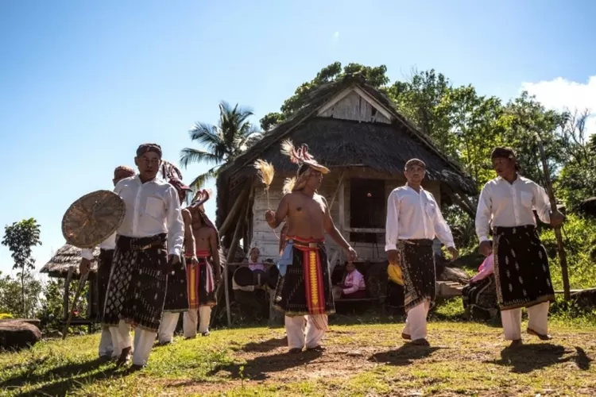
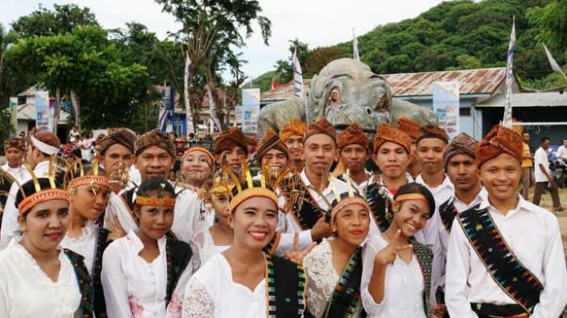

Tentang Tradisi Rumusmoso
Tradisi Rumusmoso adalah ritual adat khas masyarakat Labuan Bajo yang melambangkan kebersamaan dan solidaritas komunitas setempat. Tradisi ini diwariskan dari generasi ke generasi sebagai simbol persatuan.
Dalam pelaksanaannya, Rumusmoso menghadirkan berbagai acara adat yang penuh makna, diiringi dengan musik dan tarian tradisional.
Perayaan Tradisi Rumusmoso


Nilai-Nilai Budaya
- Kebersamaan yang menciptakan harmoni antarwarga.
- Melestarikan warisan leluhur yang penuh makna.
- Memupuk rasa solidaritas dan gotong royong dalam komunitas.
Cara Menyaksikan Rumusmoso
Pengunjung dapat menyaksikan tradisi Rumusmoso saat festival budaya tahunan di Labuan Bajo. Pastikan untuk memeriksa kalender budaya setempat untuk mengetahui jadwal acara.